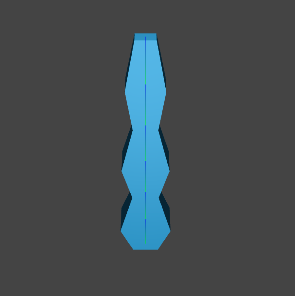
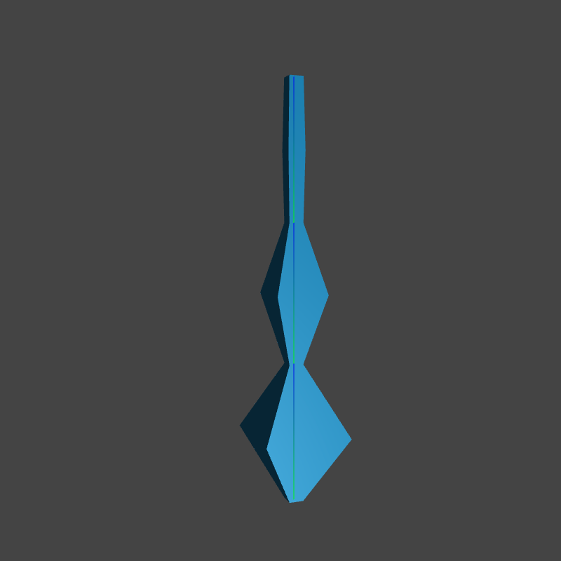

In this project, I explored the concept of kinematics, the field concerned with the motion of objects without reference to the forces causing them. To this end, I implemented forward kinematics, and inverse kinematics. Inverse kinematics is not as straightforward as forward kinematics and there have been many approaches to the task. I implemented a numerical-based approach, using the Levenberg-Marquardt algorithm, and a sampling-based approach, using the Sequential Monte Carlo method.
To prepare for implementing the kinematics approaches, I had to have something to act upon, and some way to see it. After looking around, I settled on using Three.js. To familarize myself, I went through this course. My notes are here.
It was a little rough getting started and getting to where I wanted to be. After starting and scrapping my code four times, I found an example in the documentation that was very similar to what I wanted to do, so I used it as starter code. Below is the example without any modifications.
The second step was to import my model. I found this part to be unexpectedly challenginga and ended up trying 4/5 different approaches and creating 3 models.
In my first approach, referencing this Youtube video and this Youtube video, I modeled the figure in Blender, and rigged it. After creating the model, I had to load it into the scene. My initial plan was to create the model in Blender and export it as a Three.js native model with the Three.js model exporter plugin, as the videos had suggested. However, I found out that it was deprecated and that Three.js suggests loading in a .GLTF (Graphics Library Transmission Format) file instead.
A .GLTF file is a kind of file format for 3D scenes and models using the JSON (JavaScript Object Notation) format. It is intended for web use and therefore has a minimum file size and runtime processing by apps. I couldn't see any downsides to following Three.js' suggestion, so I created my model in Blender and exported it as a .GLTF file.
So, I decided to take their suggestion and export as a .GLTF file.
Unfortunately, I ran into unexpected difficulty loading it in because the Three.js Github repo has everything in modules, which I cannot use if I do not have a server. I wanted to avoid a server if I could, so that I could host on Github Pages. As a result, I spent a long time trying to find the piece of the code that could load in my file. I did not have much luck.
Fortunately, I had taken an online course I took to get up to speed on Three.js. In that course, there were exercise files to accompany the videos. Most importantly, the libraries the exercises depended on were included, and one of the files in the library held the code for loading in .OBJ files.
Therefore, my next approach was to convert the .GLTF file I had into a .OBJ file. With this approach, I was able to successfully load it in. However, while working with the model, I ran into issues accessing the model's armature. After searching online, I was unable to find much information. The model was relatively simple, so I decided it would be a better use of my time to create the model in Three.js instead of loading it. Thus, I dropped this approach.
Hence, I started my second approach. I decided to shape the model by scaling the bones so that a wavy shape would form. It went well. However, when I was implementing forward kinematics, I realized I could not pretend two bones were one. I had split up each segment of the arm into two so that I could put a swell in the middle of each segment, and had assumed the fact there were two bones wouldn't change anything, as long as I only translate the "real" bones. That was a misconception. As a result, I dropped this approach and moved on once again.
In my final approach, I used a BoxBufferGeometry and modified the vertices. This required a lot of trial and error as I had to figure out what was the order in which the vertices were given to me (it was left, right, top, bottom, front back), then caulating the vertices' positions based on the layer they are at and whether they are part of the top/bottom or not. I calculated the number of points per layer and points per top/bottom given the input settings which allowed me to shape the model in the desired general shape even with an arbitrary number of bones/joints, although I did not end up implementing such a feature.
At this point, it doesn't really look like an arm, but it looks much more like an arm than a simple rectangle, and the shape helps me identify the joints, so I chalked this up to a win and moved on.
|
|

|

|
I also implemented a movable target point in the GUI for inverse kinematics. Essentially, in inverse kinematics, the problem statement is: given n end-effectors, and n target points, find a combination of parameters to apply to the bones to get the end-effectors to the target point or, if that is impossible, as close as possible.
In this project, I implemented a single end effector and thus needed a single target point to identify the goal position (in some implementations, a goal rotation is included, but I decided to stick with just position).
My first thought was to implement it with the arrow keys. However, I quickly realized that the arrow keys can only control two dimensions and there are three dimensions (four if you include time) in the demo. The arrows keys are also being use by the OrbitControls and I really enjoyed having the ability to move around the scene, so I was reluctant to part with it.
In the end, I decided to implement the controls to be WASD & shift + mouseMoveDirection (calculated by storing the previous mouse location and the current) with space being the key that resets its position.
I find it a little clunky, but it's much better than tediously dragging sliders around, so I decided to stick with this approach unless I think of something better. After several days of debugging and finding out my target-moving priorities, I removed this feaature and implemented the sliders that I had initially thought was clunky. In addition to the slides, I implemented a follow-mouse feature so that the target would follow the mouse around.
Other things I did to set up the environment was expose some parameters for the user to play with. A full list of all the parameters are in the instructions on the demo page.
Although the final project is typically done in groups of three, this offering of the course is in no way typical. Due to the fast pace of a summer version of the course and the fact it is fully online due to COVID, the students of this course were allowed to work on the final project alone. As I wanted to gain a thorough experience and understanding of kinematics, I decided to undertake this project alone.
Of course, I was not truly alone, as I had the entire Internet at my disposal. Here is a list in no particular order of the material I found the most helpful.